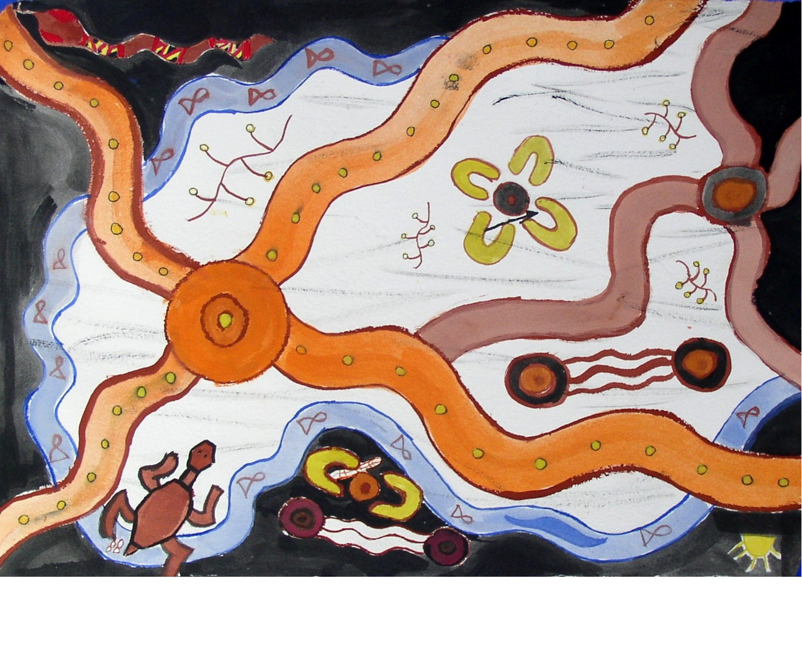
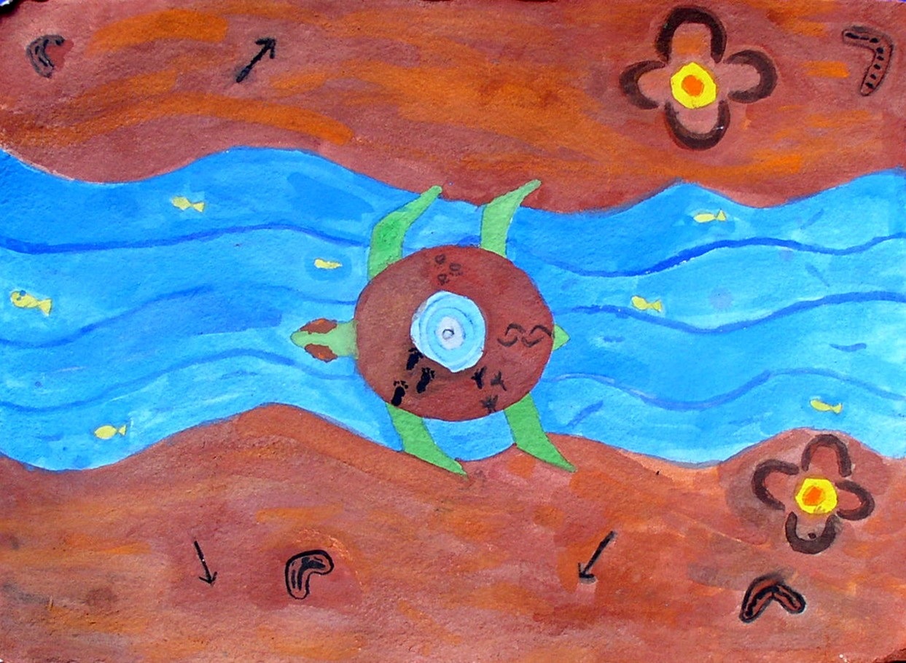

Earlier Analytics Projects
A collection of earlier projects focused on data analysis, visualisation, business insights and analytics for decision-making.

Airbnb Boston Project
Data Analysis | Investment Insights | Storytelling
This project explored Airbnb data from Boston to understand which neighbourhood rental markets appeared more robust and attractive from an investment perspective.
The analysis focused on turning raw data into business questions, identifying relevant patterns, and presenting insights in a clear and visual format.

Big Ones Little Ones
International Children's Visual Art & Literacy Program
This project focused on supporting the organisation’s strategy, processes and procedures through data-driven decision-making.
The goal was to explore how evidence and analytics could help the organisation better understand its activities, improve reporting, and support future planning.

Tableau Visualisations
Business Intelligence | Dashboards | Data Visualisation
Earlier dashboard and data visualisation work created using Tableau Public. These projects demonstrate experience in exploring datasets, creating visual stories, and communicating insights through dashboards.